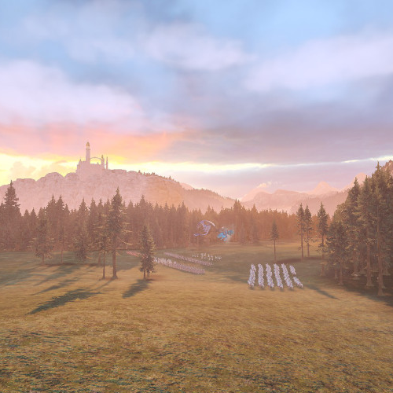
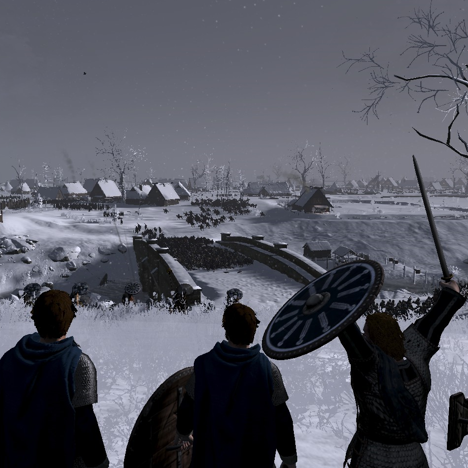
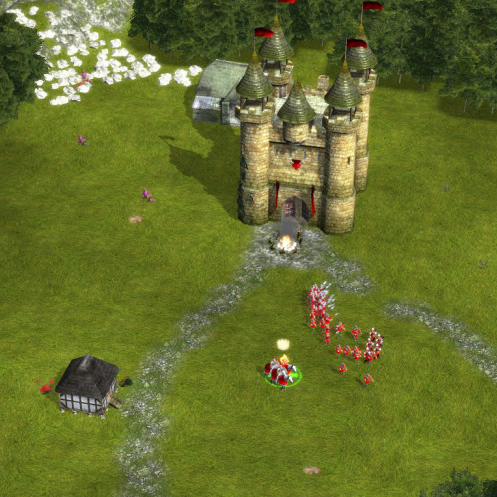
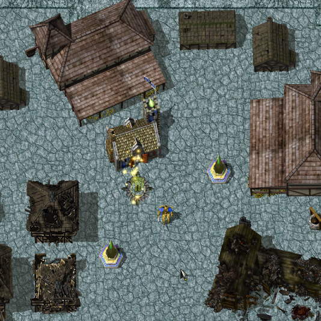
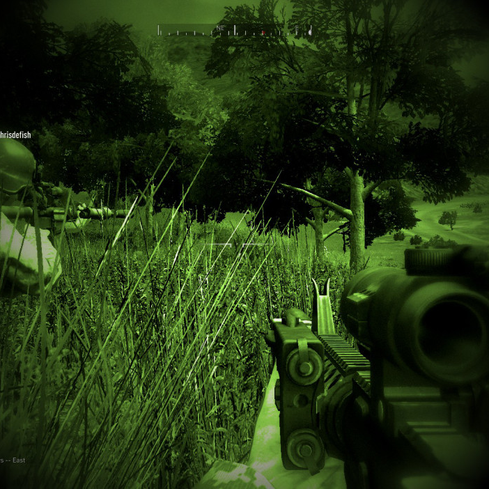
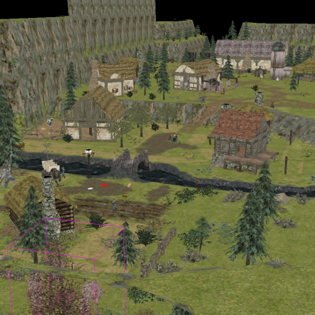
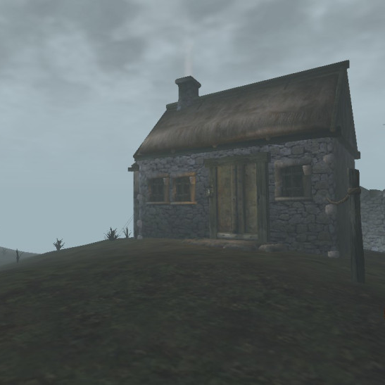

 Coastal Farmlands A custom map for Total War: Warhammer 2; focussing on open spaces and forest areas.
 Glen du Eamin-doon A custom map for Total War: Thrones of Brittania; set within a split mountainous valley, focussing on two avenues of movement.
 The Mountain Pass A custom map for Stronghold: Legends; focussing on a variety of winding paths and strategic town capture.
Tower Marsh A custom map for Stronghold: Legends; focussing on two oppossing sides each nestled upon a cliff, with a low winding marshland below.
 Desolation of Rivals A custom map for Total Annihilation: Kingdoms, focussed on war-torn grasslands wedged between two desolate urban environments.
 Assassination of Jared Kairos A custom scenario for Operation Flashpoint: Dragon Rising where the player must work with a team to assassinate a commander stationed in a small village near the coast of Skira.
 Caith A custom scenario and area map for Dungeon Siege, a town finds itself under siege by a band of Krug warriors.
 Seyda Neen: Home for sale A custom add-on for The Elder Scrolls: Morrowind, providing the player with a small home outside Seyda Neen.